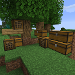
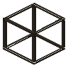

Tom's Simple Storage Mod
共 22 个条目 · toms_storage
版本: 2.4.1 · 来源: [汤姆的简易存储] toms_storage-1.21-2.4.1.jar
Simple vanilla style storage mod.
官方介绍 （Modrinth · 中文版由 GLM AI 翻译，仅供参考）
Tom's Simple Storage Mod
在 Fabric 上，如果你安装了 Sodium，则还需要 Indium！
简单的原版风格存储模组。
功能：
- 存储与合成终端
- 物品栏连接器
- 开放式板条箱
- 无线终端
- 过滤连接器
- 物品栏漏斗
如果安装了 Create Contraption Terminals，终端也可以在 Create 的机械装置上使用。
模组展示视频：
由 GLM AI 翻译，仅供参考
查看英文原文（Modrinth）
Tom's Simple Storage Mod
On Fabric Indium is required if you have Sodium installed!
Simple vanilla style storage mod.
Features:
- Storage & Crafting Terminal
- Inventory Connector
- Open Crate
- Wireless terminal
- Filtered connectors
- Inventory Hopper
Terminals also work on create contraptions if Create Contraption Terminals is installed.
Mod Spotlights:
物品与方块
 高级无线终端
高级无线终端toms_storage:adv_wireless_terminal · 物品
 基础存储漏斗
基础存储漏斗toms_storage:basic_inventory_hopper · 方块
 合成终端
合成终端toms_storage:crafting_terminal · 方块物品资料柜
toms_storage:filing_cabinet · 方块
 存储线缆
存储线缆toms_storage:inventory_cable · 方块
 存储线缆连接器
存储线缆连接器toms_storage:inventory_cable_connector · 方块
 存储线缆连接器（带框架）
存储线缆连接器（带框架）toms_storage:inventory_cable_connector_framed · 方块

镶框存储线缆toms_storage:inventory_cable_framed · 方块容器配置器
toms_storage:inventory_configurator · 物品
 存储连接器
存储连接器toms_storage:inventory_connector · 方块
 存储接口
存储接口toms_storage:inventory_interface · 方块
 存储代理器
存储代理器toms_storage:inventory_proxy · 方块
 物品筛选器
物品筛选器toms_storage:item_filter · 物品
 存储状态发信器
存储状态发信器toms_storage:level_emitter · 方块
 开放式存储接口
开放式存储接口toms_storage:open_crate · 方块
 喷漆套件
喷漆套件toms_storage:paint_kit · 物品
 存储桥连器
存储桥连器toms_storage:painted_trim · 方块
 多态物品筛选器
多态物品筛选器toms_storage:polymorphic_item_filter · 物品
 存储终端
存储终端toms_storage:storage_terminal · 方块
 标签物品筛选器
标签物品筛选器toms_storage:tag_item_filter · 物品
存储桥连器toms_storage:trim · 方块
 无线终端
无线终端toms_storage:wireless_terminal · 物品